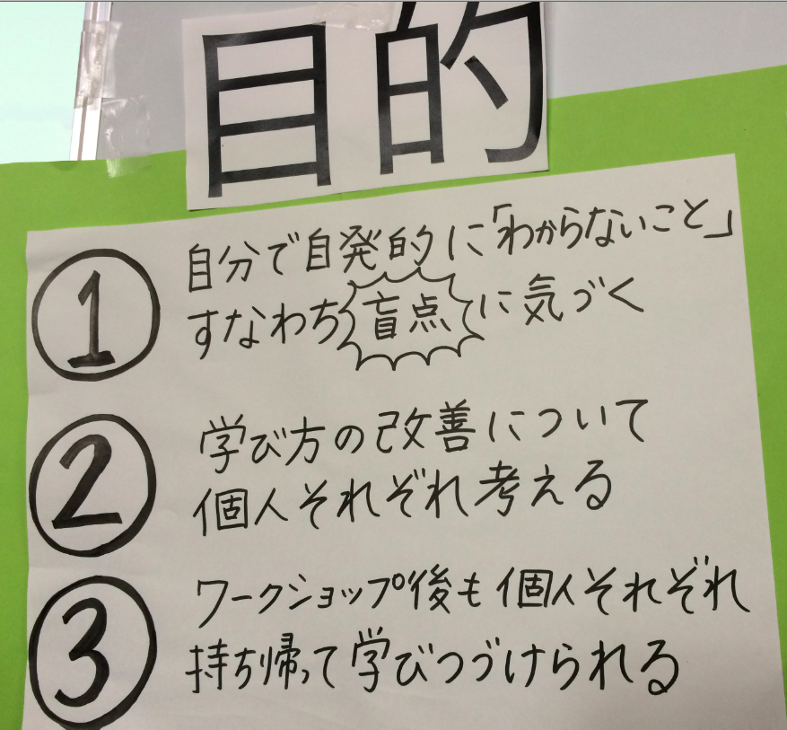

このサイトではサイボウズ・ラボの西尾泰和と竹迫良範が
京都大学サマーデザインスクール 2014で行った
「学び方のデザイン〜盲点を見つけよう」の講義資料を公開しています。

みなさん、難しい問題を考えるときにはどのようにやっていますか？書き出してから考えることが大事です。目隠し将棋と普通の将棋はどちらが簡単か、暗算と筆算はどちらが簡単か、考えて見れば明らかです。頭のなかだけで考えようとすると、覚えておくために脳の一部が割かれてしまいます。
学ぶためには、まず「わからないこと」すなわち「盲点」に気づくことが必要です。 他人から教わるのではなく、自分で盲点に気づくために、わたしたちのチームではまず思いつくことをすべて付箋に書いて、それを他人と共有しました。
そして、その付箋を各個人が6時間掛けてボトムアップに組み上げました。このワークショップで得られた成果はこちらで見ることができます。
メールアドレス: nishio (dot) hirokazu (at) gmail (dot) com
西尾泰和のプロフィールに戻る